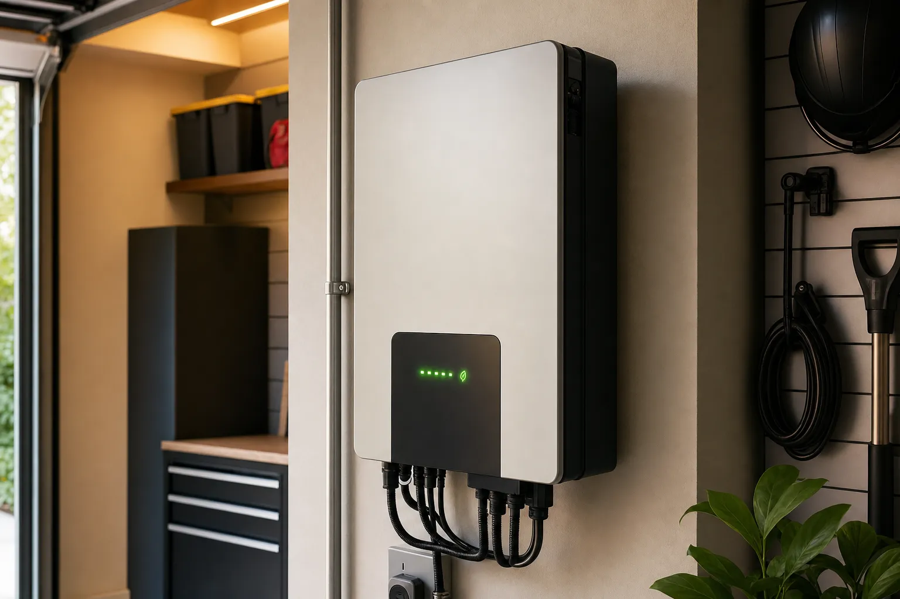

Equipment
How to choose a solar inverter in 2026
The inverter is the brain of your solar system — it converts DC power from panels into the AC power your appliances use, or manages DC-to-DC charging for battery systems. Choosing the right type and size matters more than most people realize. This guide covers every inverter type, how to size one, and what to look for.

Inverter types: which one do you need?
| Type | Best for | Cost range |
|---|---|---|
| String inverter | Grid-tied, unshaded roof, simple systems | $500–$2,000 |
| Microinverter | Grid-tied, shaded or complex roofs, expandability | $150–$250/panel |
| Power optimizer + string inverter | Grid-tied, partially shaded, midrange cost | $50–$150/panel + string inverter |
| Off-grid inverter/charger | Off-grid cabins, batteries + generator integration | $300–$3,000 |
| Hybrid inverter | Grid-tied + battery backup, whole-home backup | $1,500–$5,000 |
Your use case — grid-tied vs off-grid, with or without batteries, shaded vs unshaded — largely determines which type you need before you even look at brands or models.
String inverters for grid-tied systems
A string inverter takes the DC output from one or more "strings" of panels wired in series and converts it to AC for your home and the grid. They're the traditional standard for grid-tied residential solar.
How they work
Panels in a string are wired in series — their voltages add. A string of 10 panels at 40V each = 400V input to the inverter. The inverter converts this DC input to 240V AC. Typical residential string inverters handle one or two strings.
The shading problem
String inverters have a critical limitation: the entire string performs at the level of its worst-performing panel. If one panel is shaded by a chimney shadow from 2–4 PM, it drags down the output of the whole string. This is why microinverters and power optimizers were developed.
When string inverters make sense
- Roof is south-facing and unshaded all day
- All panels are the same model and same tilt
- Simple rectangular array with no obstructions
- You want the lowest system cost
Top brands: SolarEdge (with power optimizers), SMA, Fronius, Growatt, Huawei/iStore.
Microinverters
A microinverter is a small inverter mounted on each individual panel. Each panel converts DC to AC independently, eliminating the string limitation problem.
Advantages
- Panel-level MPPT: Each panel is optimized individually — one shaded panel doesn't affect the others
- Expandability: Add panels one at a time without worrying about string sizing or adding a separate inverter
- Monitoring: Panel-level monitoring lets you see exactly which panel is underperforming
- Safety: No high-voltage DC wiring on the roof (panels operate at lower AC voltage)
Disadvantages
- Higher cost: $150–$250 per panel vs $500–$2,000 total for a string inverter
- Heat exposure: Mounted on the back of panels where temperatures are high; longevity can be lower in hot climates
- More components: More potential failure points (though individual failures affect only one panel)
When to use microinverters: Complex roofs with multiple orientations, shading from trees or dormers, east-west arrays, or when panel-level monitoring is important.
Top brand: Enphase dominates the US microinverter market with its IQ series. Also consider APsystems for cost-competitive options.
Off-grid inverter/chargers
For systems not connected to the utility grid, you need an inverter/charger — a combined unit that:
- Converts DC battery power to AC for your loads
- Charges batteries from solar (via charge controller) and/or a generator
- Manages load priority and battery protection
Off-grid inverter/chargers are sized differently from grid-tied inverters. The key specs:
- Continuous wattage rating: The maximum load it can power continuously. Must exceed your peak expected load.
- Surge rating: Short-term peak wattage for motor startups. Must exceed the surge of your largest motor (well pump, AC unit, refrigerator compressor).
- Battery voltage: 12V, 24V, or 48V. Match to your battery bank voltage. 48V is most efficient for larger systems.
- Charger input: How much AC charging current it can accept from a generator.
Off-grid inverter sizing example
For a cabin with 2,000W of average loads, a 3kW well pump (surge to 6kW), and a 48V battery bank: you need a 48V inverter/charger rated for 3,000W continuous and 6,000W+ surge. An Outback FXR3048A or Victron MultiPlus-II 48/3000 would both work.
Top brands: Victron Energy (highest quality), Outback Power, SMA Sunny Island, Renogy (budget).
Hybrid inverters for battery backup
Hybrid inverters handle grid-tied solar AND battery storage in one unit. They're designed for the home battery backup market — think Tesla Powerwall, but the inverter that manages it rather than the battery itself.
A hybrid inverter:
- Connects to solar panels, batteries, your home loads, and the grid
- Exports excess solar to the grid
- Stores solar production in batteries for evening use or backup
- Can island from the grid during a power outage and continue powering your home
This is the fastest-growing inverter category in 2026 as home battery storage becomes mainstream.
Top brands: SolarEdge (with Backup Interface), Enphase IQ8 (microinverter-based), Generac PWRcell, Outback Radian, Victron Quattro.
How to size your inverter
Grid-tied systems
Match the inverter capacity to your solar array capacity. Standard rule: inverter wattage should be 90–120% of your panel array's STC wattage.
Example: 6,000W array (15 × 400W panels) → 5,000–7,200W inverter. A 6,000W string inverter is ideal.
Some installers "clip" the array slightly — use a 5kW inverter with a 6kW array — because panels rarely hit their STC ratings in real conditions, and clipping loses minimal production while reducing inverter cost.
Off-grid systems
Size to your peak load, not your average load. List every appliance you might run simultaneously:
| Appliance | Running watts | Startup surge |
|---|---|---|
| Well pump (1HP) | 750W | 2,000–3,000W |
| Refrigerator | 150W | 400–600W |
| Window AC (8,000 BTU) | 800W | 1,500–2,000W |
| Microwave | 1,000W | 1,000W |
| LED lighting (5 circuits) | 300W | 300W |
If you run the well pump + refrigerator + one AC window unit simultaneously, you need ~1,700W running and up to 5,600W surge. A 3,000W continuous / 6,000W surge inverter covers this comfortably.
Efficiency and key features
Inverter efficiency
Inverter efficiency is the percentage of DC input converted to AC output (the rest is lost as heat). Top string and microinverters achieve 96–98% efficiency. Budget units may be 92–94%.
Over 20 years, a 1% efficiency difference on a 6kW system at $0.15/kWh = approximately $1,600 in production value. Efficiency matters, but don't pay a premium for 97% vs 96.5% — the marginal difference isn't worth it.
Other features to check
- Warranty: 10–12 years for string inverters, 25 years for Enphase microinverters. Inverter lifespan is the key limiting factor in a solar system's long-term performance.
- Monitoring: All modern inverters include Wi-Fi monitoring. Ensure it shows energy production history, not just real-time output.
- Grid code compliance: For grid-tied systems, the inverter must be listed on your utility's approved inverter list. Check before purchasing.
- Service and support: A well-documented inverter from a major brand with local installer support is worth more than a cheaper unit that's hard to service.
Frequently Asked Questions
What size inverter do I need for a 10kW solar system?
A 10kW (10,000W) solar array typically pairs with a 7,600W to 11,000W inverter. Common choices are a 10kW string inverter (single unit) or Enphase IQ8 microinverters (one per panel, totaling ~10kW). The standard rule is 90–110% of array STC wattage.
Can I add battery storage to a string inverter system later?
It depends. Some string inverters (SolarEdge, Fronius) have compatible battery interfaces that allow adding storage later. Traditional string inverters without battery capability would need to be replaced with a hybrid inverter to add batteries. If you're planning to add storage in the next 5 years, start with a hybrid inverter or at least a battery-compatible string inverter.
How long does a solar inverter last?
String inverters typically last 10–15 years with a 10–12 year warranty. Microinverters (particularly Enphase) are rated to 25 years and carry 25-year warranties. In a 25-year solar system, expect to replace a string inverter once. Factor this replacement cost (~$1,000–$2,500) into your long-term financial analysis.
Is a higher efficiency inverter always worth the extra cost?
Not usually. Going from 94% to 97% efficiency saves approximately 3% of your production — on a 6kW system in a 1,700kWh/year production environment, that's about 51 kWh/year, worth roughly $7.65/year at $0.15/kWh. A premium inverter charging $300 more for that 3% efficiency gain has a 40-year payback. Focus on reliability and warranty over marginal efficiency improvements.